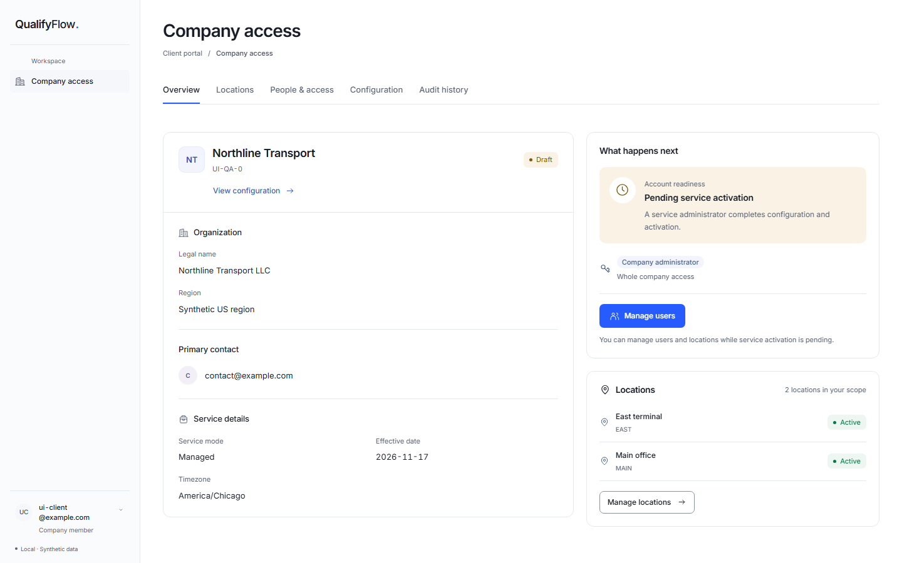
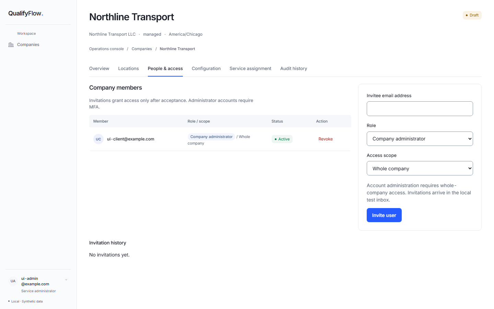
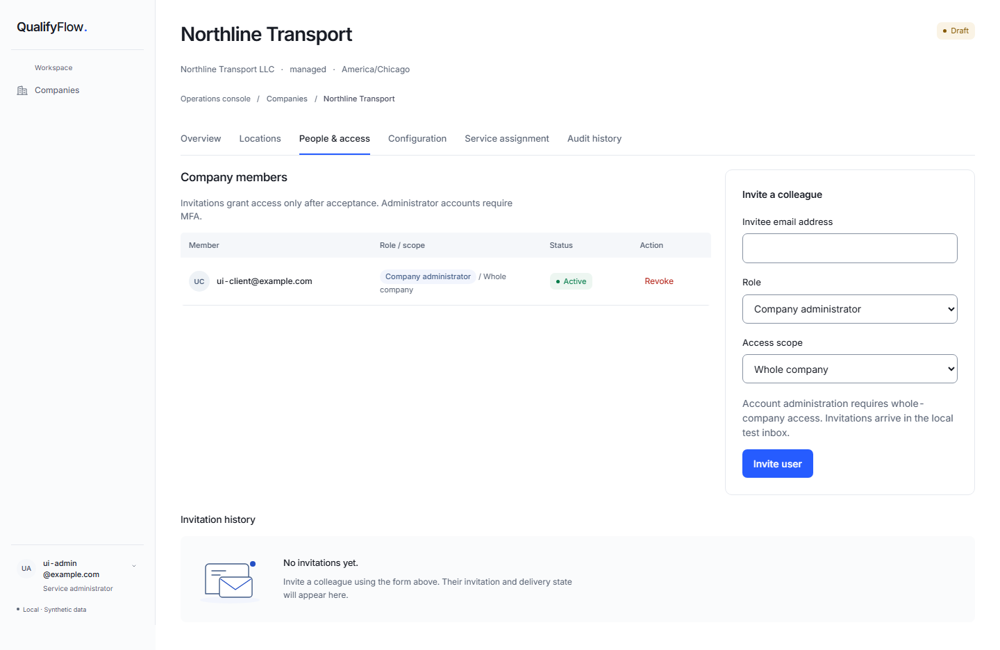
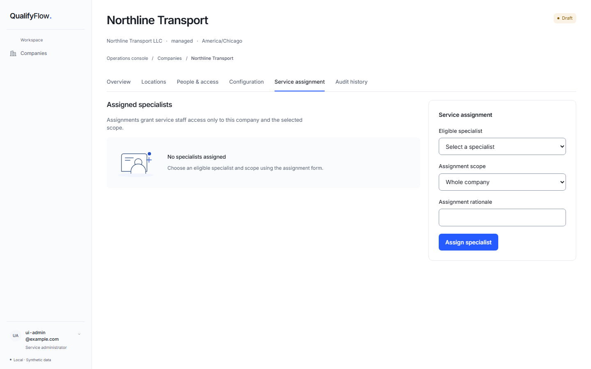
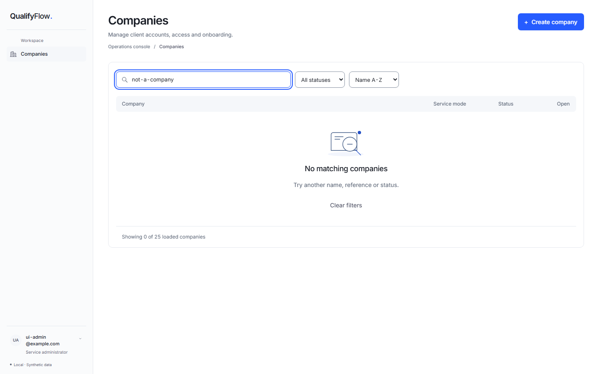

Actual synthetic application captures. Approved layout retained; clearer icons, original spot illustrations, identity cues and confirmed feedback. Design and verification report · Raw results
Company Overview · same 1440px viewport
BeforeAfter

People and invitation empty state
Before

After

Original contextual illustrations
Specialist assignment

No matching companies

Confirmed writes and honest rejection · form crops